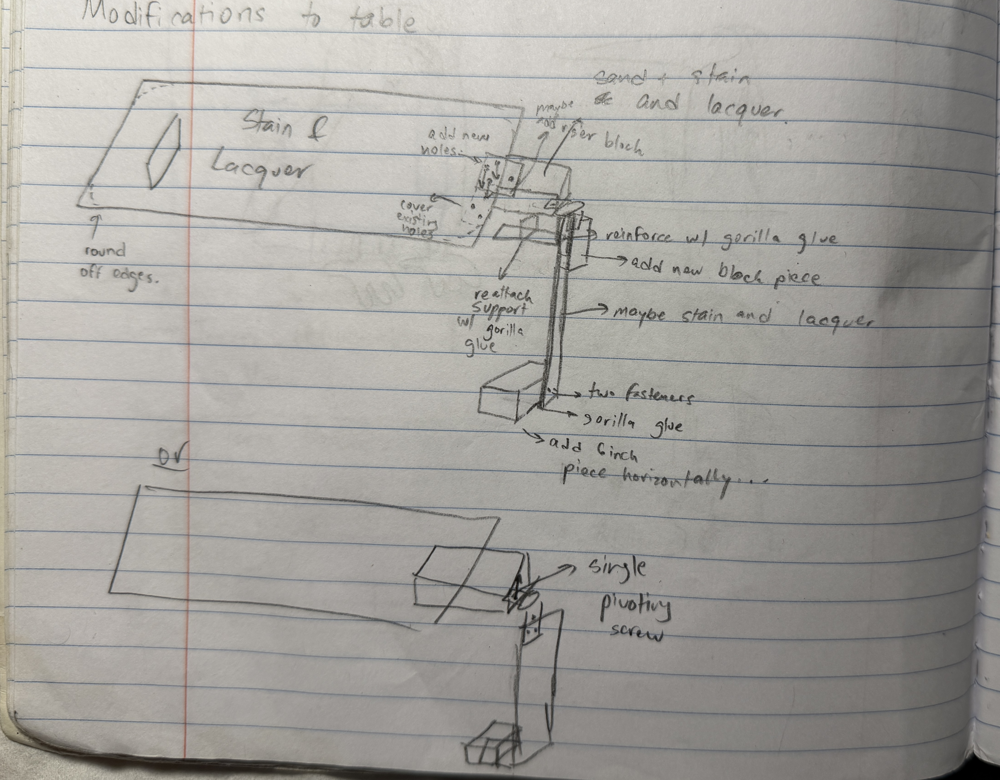

This table was just one of those additions I wanted to make to my room, especially during the long summer days. I had this armchair in a corner of my room, that, while super comfy, had not place to put things down and do work. To make better use of the chair, I decided to take a page from airplane seats and make a tray table that could be folded up and stowed away to allow for easy access. Given this requirement, this required a custom design and some woodworking, which I had never really done.
The main table surface was made from a sheet of plywood I found lying around the house. The hinges were 3 inch door hinges sourced from Lowes. Various block pieces comprising the clamping support structures were also fashioned using the plywood sheets. All of the cuts were done using handsaws, leading to a lot of uneven edges that I would hit with sanding paper. Some pieces, such as the support leg, were affixed using wood glue, while other pieces, such as the hinges were affixed using countersunk screws.
Before applying lacquer and stain, I would sand the surface of the table, making sure to lightly draw pencil lines and sand with the grain, and removing residual dust with a cloth. After the finish was looking good enough, I applied multiple coats of a MinWax water based stain + polyurethane finish. The finish wasn't as dark as I expected, but it still turned out a lot better than the unfinished original wood.
